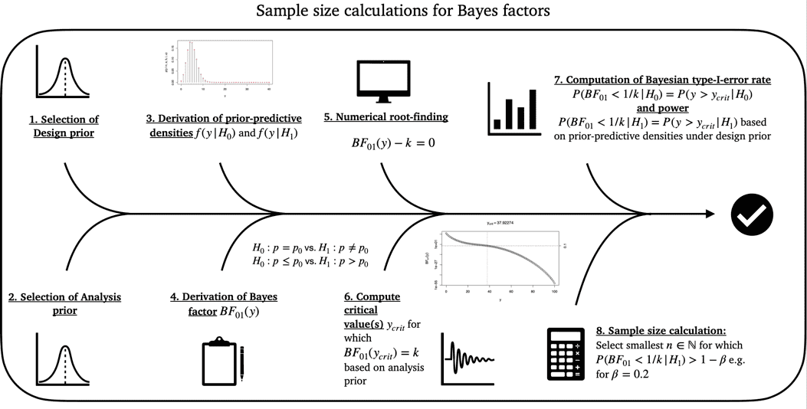
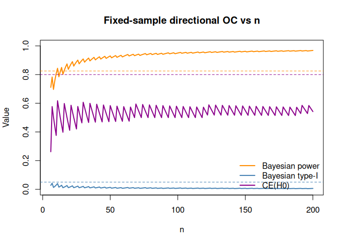

Optimal Bayesian calibration for single-arm two-stage Bayes factor designs
Riko Kelter
Institute of Medical Statistics and Computational Biology
Faculty of Medicine
University of Cologne
Cologne, Germany
Institute of Medical Statistics and Computational Biology
Faculty of Medicine
University of Cologne
Cologne, Germany
23 June 2026
Source:vignettes/bfbin2arm-singlearm-twostage_bayesian.Rmd
bfbin2arm-singlearm-twostage_bayesian.RmdIntroduction
This vignette illustrates how to work with optimal two-stage single-arm Bayes factor designs for binomial phase II trials. The package provides numerical tools for calibrating single-arm phase II designs that minimize the expected sample size under the null hypothesis while allowing early stopping for futility.
In the single-arm setting considered here, the null hypothesis is
where denotes the response probability and is the null response rate. Evidence is quantified by the Bayes factor , that is, evidence in favour of relative to .
The function optimal_twostage_singlearm_bf() calibrates
a two-stage design with one interim analysis for futility. Small values
of
indicate evidence against
,
whereas large values indicate evidence in favour of
.
Hypotheses and thresholds
The decision thresholds are:
-
k < 1for efficacy, so that indicates evidence against , -
k_f > 1for futility, so that indicates evidence in favour of .
Thus, the design allows early stopping for futility at the interim analysis if the interim data already provide sufficiently strong evidence in favour of the null hypothesis.
Priors and calibration inputs
The function optimal_twostage_singlearm_bf() uses three
conceptually distinct types of inputs:
- Analysis prior, used inside the Bayes factor.
- Bayesian design prior, used for Bayesian operating characteristics.
- Frequentist point alternative, used for strictly frequentist power calculations.
These play different roles and should not be confused.
Analysis prior
The Bayes factor itself is computed using an analysis prior under . In the notation of (Kelter and Pawel 2025a), this prior is
and in the function interface these parameters are passed as
a and b.
This prior determines how evidence is quantified at the interim and
final analyses. A common default choice is a = 1 and
b = 1, corresponding to a uniform prior on
.
Bayesian design prior
For Bayesian operating characteristics such as Bayesian power, Bayesian type-I error, and the probability of compelling evidence under , the design is calibrated under a Bayesian design prior. In the notation of the preprint, this prior is
and in the implementation these parameters are passed as
da and db.
This prior is used only for planning and calibration. It reflects which response probabilities are regarded as plausible under the alternative hypothesis when Bayesian power is computed in a prior-predictive sense.
Frequentist point alternative
In addition to the Bayesian design prior, the function also uses the
parameter dp. This parameter is not part
of the Bayesian prior specification. It is used solely for
frequentist power calculations as a fixed point
alternative.
More precisely, when power is evaluated in a strictly frequentist sense, the response probability under the alternative is taken to be
Thus, dp defines the single point alternative at which
frequentist power is evaluated, whereas da and
db define a full prior distribution under
for Bayesian operating characteristics.
Interpretation of Bayesian and frequentist power
Because the function supports both Bayesian and frequentist operating characteristics, it is helpful to distinguish the two notions of power.
The function design_singlearm_bf()
The main calibration function is design_singlearm_bf().
The most important arguments are:
-
n1_min: minimal interim sample size. -
n2_max: maximal final sample size. -
k: efficacy threshold. -
k_f: futility threshold. -
p0: null response probability. -
a0,b0: analysis-prior parameters used inside the Bayes factor under . -
a1,b1: analysis-prior parameters used inside the Bayes factor under . -
da0,db0: Bayesian design-prior parameters used for Bayesian operating characteristics under . -
da1,db1: Bayesian design-prior parameters used for Bayesian operating characteristics under . -
dp: fixed response probability used as a point alternative for strictly frequentist power calculations. -
type: Bayes-factor type, currently"point"or"direction". -
target_power: target Bayesian power. -
target_type1: target Bayesian type-I error. -
target_ce_h0: optional lower bound on the probability of compelling evidence under . -
power_cushion: optional additional margin used during fixed-sample calibration before introducing the interim analysis. Serves primarily to allow the algorithm to find an optimal design.
The function returns an object of class
singlearm_bf_design containing the selected design, the
corrected operating characteristics, and the search results over
candidate interim sample sizes.
Overview of the calibration algorithm

Figure 1: Illustration of the calibration algorithm for an optimal Bayesian single-arm two-stage phase II design with a binary endpoint
The calibration algorithm in
optimal_twostage_singlearm_bf() proceeds in two steps.
Fixed-sample calibration (step 1): A sufficient fixed-sample design size is identified so that the requested operating characteristics are met at the fixed-sample level.
Two-stage calibration (step 2): Conditional on this fixed-sample design, the function searches over all admissible interim sample sizes , computes corrected two-stage operating characteristics, and selects the feasible design with smallest expected sample size under .
The admissible values of
start at n1_min and range up to n2 - 1. Thus,
the larger the sufficient fixed-sample size found in step 1, the more
candidate interim looks are evaluated in step 2.
Interpretation of the corrected operating characteristics
The corrected operating characteristics differ from the corresponding fixed-sample quantities because the two-stage design allows early stopping for futility. Any data path that would have crossed the futility threshold at the interim analysis is removed from the set of possible final outcomes.
As a consequence:
- corrected power is at most the naive fixed-sample power,
- corrected type-I error is at most the naive fixed-sample type-I error,
- corrected compelling evidence under is at least the naive fixed-sample quantity.
These corrections are computed exactly from the prior-predictive distribution and do not require Monte Carlo simulation.
At present, the lower-level helper powerbinbf01seq()
allows an optional separate threshold k_ce for compelling
evidence in favour of
,
whereas the higher-level search function
optimal_twostage_singlearm_bf() exposes only the futility
threshold k_f. In the current implementation, whenever a
positive lower bound on compelling evidence under
is requested through target_ce_h0, the function uses the
same threshold for futility and compelling evidence.
Detailed example: Nonsmall cell lung cancer phase II trial
We consider a single-arm phase II trial with null response probability in the context of nonsmall cell lung cancer, for details see (Kelter and Pawel 2025a). Evidence is quantified through the Bayes factor , with a small threshold for efficacy and a large threshold for futility. Thus, we first use the two-sided test of versus .
In the example below, the design is calibrated with:
- null response rate ,
- efficacy threshold ,
- futility threshold ,
- target type-I error 0.05,
- target power 0.80.
The Bayesian design prior under
is specified by da = 2 and db = 2.5, so the
design prior mean is
and we expect a success probability of about
.
In addition, the strictly frequentist power is evaluated at the point
alternative dp = 0.4, so that frequentist power refers to a
true response probability of
.
Optimal design search
The following code searches for an optimal two-stage single-arm Bayes
factor design and returns an object of class
singlearm_bf_design.
res <- design_singlearm_bf(
n1_min = 5,
n2_max = 200,
k = 1/3,
k_f = 3,
p0 = 0.2,
a0 = 1,
b0 = 1,
a1 = 1,
b1 = 1,
dp = 0.4,
da0 = 1,
db0 = 1,
da1 = 2.5,
db1 = 2,
type = "point",
calibration = "Bayesian",
target_power = 0.80,
target_type1 = 0.05
)The returned object stores the selected design, its operating characteristics, and the search results over admissible interim sample sizes.
Printing and summarizing the result
The design object has dedicated print() and
summary() methods.
summary(res)
#> Summary: Single-arm two-stage Bayes factor design
#> ---------------------------------------------------------
#> Feasible: TRUE
#> Calibration: Bayesian
#> Design prior under H0: point mass at p0
#> Design prior under H1: Beta(2.5, 2)
#>
#> Selected design: n1 = 36, n2 = 41
#>
#> Bayesian operating characteristics
#> Power: 0.8000
#> Type-I: 0.0169
#> CE H0: NA
#> EN H0: 37.47
#> EN H1: 40.55
#>
#> Frequentist operating characteristics
#> Power: 0.7251
#> Type-I: 0.0169
#> EN H0: 37.47
#> EN H1: 40.78The output reports the selected interim and final sample sizes as
well as the main operating characteristics. Also, the type of test, in
this case the two-sided one, and the status is reported. The latter
indicates whether an optimal feasible two-stage design could be found
based on the constraints specified by the user. These include the design
and analysis priors, the evidence thresholds k and
k_f for efficacy and futility, the minimum and maximum
sample sizes n1_min and n2_max, and the
required power and type-I-error targets target_power and
target_type1.
The results indicate that the optimal single-arm two-stage design is
fully calibrated from a Bayesian point of view: It achieves the required
80% Bayesian power and less than 5% Bayesian type-I-error. From a
frequentist perspective, the type-I-error is also calibrated with
,
but the power does not suffice: The frequentist power, calculated under
the point alternative
,
specified via the parameter dp = 0.4, achieves a power of
,
which is less than the desired 80%. Also, we can see the expected sample
sizes under
and
for the optimal design both from a Bayesian and frequentist perspective.
These differ, because the expected sample size under
is computed as an average over the design prior for the Bayesian
expected sample size, while for the frequentist one it is computed under
the point-prior at dp = 0.4. Under the null hypothesis
,
the design prior is a point mass at
in this case, and therefore the Bayesian expected sample size under
is the expected sample size at the probability
.
The frequentist expected sample size under
for
also is the expected sample size at the probability
.
Thus, the two values coincide here with an expected sample size of
patients in the optimal trial design.
Accessing and plotting the results
We can access the output of the calibration algorithm via the object
res$search_results. Printing them as a table, for example,
is possible as follows:
if (!is.null(res$search_results) && nrow(res$search_results) > 0) {
knitr::kable(res$search_results)
} else {
cat("No search results are available for this fit.\n")
}The design object also has a plot() method. It
visualizes the search results over the candidate interim sample sizes
and overlays the target constraints for power, type-I error, and, if
requested, compelling evidence under
.
plot(res)![Figure 2: Output of the plot function for a calibrated optimal single-arm two-stage design using Bayes factors. The top left panel shows Bayesian and frequentist power, Bayesian type-I-error and probability of compelling evidence (if specified) for varying interim sample sizes. The top right panel provides information about the optimal design found by the algorithm and its Bayesian and frequentist operating characteristics. The lower left and right panels visualize the analysis and design priors under the null and alternative hypothesis. Under the null hypothesis $H_0:p=p_0$, the design and analysis priors are point masses at the specified null probability `p0`.](figures/optimal_single_arm_two_stage_bayes_fig2.png)
Figure 2: Output of the plot function for a calibrated optimal
single-arm two-stage design using Bayes factors. The top left panel
shows Bayesian and frequentist power, Bayesian type-I-error and
probability of compelling evidence (if specified) for varying interim
sample sizes. The top right panel provides information about the optimal
design found by the algorithm and its Bayesian and frequentist operating
characteristics. The lower left and right panels visualize the analysis
and design priors under the null and alternative hypothesis. Under the
null hypothesis
,
the design and analysis priors are point masses at the specified null
probability p0.
This plot is useful for understanding the trade-off induced by the interim analysis. In particular, it shows how power, type-I error, and compelling evidence under vary with the interim sample size , while the vertical reference line marks the selected optimal design.
Several points become apparent when inspecting the results above:
- The optimal design is the one which introduces an interim analysis after 36 patients have been recruited and their outcomes are observed.
- This optimal design conducts the final analysis after 41 patients, and the expected sample size under the null hypothesis is .
- The Bayesian power is , while the frequentist power calculated under the point prior at is . Thus, the design is not fully calibrated in terms of frequentist power. The Bayesian power is calculated under the design prior shown in the bottom left panel, which averages the resulting power values under the different prior probabilities under the design prior. Note that it is currently not possible to calibrate the design both in terms of frequentist and Bayesian constraints on power and type-I-error. The frequentist operating characteristics are solely computed post-hoc, after the design is calibrated in terms of Bayesian power, type-I-error, and, if specified, probability of compelling evidence. An extension of the algorithm and existing methodology might add this feature in the future.
- The design prior is slightly optimistic about the treatment effect,
as we specified
da = 2.5anddb = 2when calling the function. Thus, our prior assumptions can be interpreted as follows: We pretend as if we have already observed 2.5 successes and 2 failures for this drug / treatment. However, all of these assumptions are only influencing the resulting operating characteristics of the single-arm two-stage design via the design priors, and any analysis eventually carried out during the trial (interim analysis or final analysis) makes use of the analysis priors. These are shown in the bottom panels, too, and are flat under . Under , for the two-sided test both the design and analysis priors become point masses at the null parameter . - Lastly, the frequentist type-I-error is reported as , which here coincides with the Bayesian type-I-error. In general, these differ as the frequentist type-I-error is more conservative and a worst-case calculation. In the setting of the two-sided test of against , however, the Bayesian type-I-error is calculated like the frequentist type-I-error under a single parameter value and thus both type-I-errors (Bayesian and frequentist) coincide, because
where the right-hand side of the above display is precisely the frequentist type-I-error under . For directional tests such as against , however, these should, in general, differ substantially. In those cases, the frequentist type-I-error is the supremum
while the Bayesian type-I-error is the design prior averaged probability
where denotes the design prior truncated to the parameter space of . We turn to such an example demonstrating this phenomenon later in this vignette.
Inspecting the result object
The selected design and operating characteristics can also be extracted programmatically.
res$design
#> n1 n2
#> 36 41The full operating characteristics can be accessed as follows (not shown here to avoid cluttered output):
res$operating_characteristicsLikewise, if available, the full search table can be inspected as follows (also not shown here to avoid cluttered output):
if (!is.null(res$search_results) && nrow(res$search_results) > 0) {
utils::head(res$search_results)
} else {
cat("No search table is available.\n")
}This is useful when comparing several candidate designs or when checking why a particular interim sample size was selected.
Example with a constraint on compelling evidence for the null hypothesis
A compelling-evidence constraint under can be added during calibration. In that case, only designs with sufficiently large corrected probability of compelling evidence under are regarded as feasible. This implies, that when holds, we can assert a minimum probability to stop the trial early for futility. That minimum probability can be specified in advance of the trial during the planning stage, and formally, the trial design must then satisfy the condition
for some futility probability threshold .
As above, da = 2.5 and db = 2 specify the
slightly optimistic Bayesian design prior, whereas dp = 0.4
specifies the point alternative used for frequentist power evaluation.
We specify the parameter target_ce_h0 = 0.6 to add the
requirement of 60% probability of compelling evidence for
to our trial design:
res_ce <- design_singlearm_bf(
n1_min = 5,
n2_max = 200,
k = 1/3,
k_f = 3,
p0 = 0.2,
a0 = 1,
b0 = 1,
a1 = 1,
b1 = 1,
dp = 0.4,
da0 = 1,
db0 = 1,
da1 = 2.5,
db1 = 2,
type = "point",
calibration = "Bayesian",
target_power = 0.80,
target_type1 = 0.05,
target_ce_h0 = 0.60
)We inspect the results of the calibration algorithm:
summary(res_ce)
#> Summary: Single-arm two-stage Bayes factor design
#> ---------------------------------------------------------
#> Feasible: TRUE
#> Calibration: Bayesian
#> Design prior under H0: point mass at p0
#> Design prior under H1: Beta(2.5, 2)
#>
#> Selected design: n1 = 36, n2 = 41
#>
#> Bayesian operating characteristics
#> Power: 0.8000
#> Type-I: 0.0169
#> CE H0: 0.8392
#> EN H0: 37.47
#> EN H1: 40.55
#>
#> Frequentist operating characteristics
#> Power: 0.7251
#> Type-I: 0.0169
#> EN H0: 37.47
#> EN H1: 40.78The design now requires and patients. Also, the operating characteristics like the expected sample sizes under and have changed. Of course, the probability of compelling evidence for now also is at least the specified 60%. In this case, it even is , which is much larger. The reason is that the calibration algorithm picks a two-stage design which minimizes the expected sample size under , and if, by chance, this design has a very large probability of compelling evidence for the null hypothesis, a situation like this one can arise. Also, note that both criteria go hand in hand: If the probability of compelling evidence for is large, this implies that when holds, the trial often stops for futility. This in turn decreases the expected sample size under , which is the criterion used to isolate the optimal Bayesian design.
We can plot the resulting design with the probability of compelling evidence constraint now also shown in the upper left panel:
plot(res_ce)![Figure 3: Output of the plot function for a calibrated optimal single-arm two-stage design using Bayes factors. In addition to the previous calibration requirements in terms of power and type-I-error rate, this design also adds a constraint on the probability of compelling evidence in favour of the null hypothesis $H_0$. The top left panel again shows Bayesian and frequentist power, Bayesian type-I-error and probability of compelling evidence (if specified) for varying interim sample sizes. The top right panel provides information about the optimal design found by the algorithm and its Bayesian and frequentist operating characteristics. The lower left and right panels visualize the analysis and design priors under the null and alternative hypothesis. Under the null hypothesis $H_0:p=p_0$, the design and analysis priors are point masses at the specified null probability `p0`.](figures/optimal_single_arm_two_stage_bayes_fig3.png)
Figure 3: Output of the plot function for a calibrated optimal
single-arm two-stage design using Bayes factors. In addition to the
previous calibration requirements in terms of power and type-I-error
rate, this design also adds a constraint on the probability of
compelling evidence in favour of the null hypothesis
.
The top left panel again shows Bayesian and frequentist power, Bayesian
type-I-error and probability of compelling evidence (if specified) for
varying interim sample sizes. The top right panel provides information
about the optimal design found by the algorithm and its Bayesian and
frequentist operating characteristics. The lower left and right panels
visualize the analysis and design priors under the null and alternative
hypothesis. Under the null hypothesis
,
the design and analysis priors are point masses at the specified null
probability p0.
The upper left panel in Figure 3 shows that now the probability of compelling evidence (PCE) constraint for is also visible in the plot for different interim sample sizes. The horizontal dashed line at shows that essentially all two-stage designs satisfy our target constraint
Example with a directional test
The previous two examples used the point-null Bayes factor through
type = "point". In most applications, however, the
clinically relevant question is directional, namely whether the response
probability exceeds the null benchmark
.
This directional setting corresponds to testing
with
,
as considered in (Kelter and Pawel 2025a)
and (Kelter and Pawel 2025b). In the
implementation, this is obtained by setting
type = "direction".
As before, da = 2.5 and db = 2 specify the
slightly informative Bayesian design prior, whereas
dp = 0.4 specifies the point alternative used for
frequentist power evaluation. For now, we keep our target constraint of
60% on the probability of compelling evidence for the null hypothesis
when calibrating the design.
res_dir <- design_singlearm_bf(
n1_min = 5,
n2_max = 200,
k = 1/3,
k_f = 3,
p0 = 0.2,
a0 = 1,
b0 = 1,
a1 = 1,
b1 = 1,
dp = 0.4,
da0 = 1,
db0 = 1,
da1 = 2.5,
db1 = 2,
type = "direction",
calibration = "Bayesian",
target_ce_h0 = 0.60,
target_power = 0.80,
target_type1 = 0.05
)
summary(res_dir)
#> Summary: Single-arm two-stage Bayes factor design
#> ---------------------------------------------------------
#> Feasible: TRUE
#> Calibration: Bayesian
#> Design prior under H0: Beta(1, 1) truncated to [0, p0]
#> Design prior under H1: Beta(2.5, 2) truncated to (p0, 1]
#>
#> Selected design: n1 = 5, n2 = 11
#>
#> Bayesian operating characteristics
#> Power: 0.8374
#> Type-I: 0.0388
#> CE H0: 0.8860
#> EN H0: 7.31
#> EN H1: 10.72
#>
#> Frequentist operating characteristics
#> Power: 0.6898
#> Type-I: 0.1556
#> EN H0: 9.03
#> EN H1: 10.53
plot(res_dir)![Figure 4: Output of the plot function for a calibrated optimal single-arm two-stage design using Bayes factors in the directional test setting. The top left panel again shows Bayesian and frequentist power, Bayesian type-I-error and probability of compelling evidence (if specified) for varying interim sample sizes. The top right panel provides information about the optimal design found by the algorithm and its Bayesian and frequentist operating characteristics. The lower left and right panels visualize the analysis and design priors under the null and alternative hypothesis. Under the null hypothesis $H_0:p=p_0$, the design and analysis priors are point masses at the specified null probability `p0`.](figures/optimal_single_arm_two_stage_bayes_fig4.png)
Figure 4: Output of the plot function for a calibrated optimal
single-arm two-stage design using Bayes factors in the directional test
setting. The top left panel again shows Bayesian and frequentist power,
Bayesian type-I-error and probability of compelling evidence (if
specified) for varying interim sample sizes. The top right panel
provides information about the optimal design found by the algorithm and
its Bayesian and frequentist operating characteristics. The lower left
and right panels visualize the analysis and design priors under the null
and alternative hypothesis. Under the null hypothesis
,
the design and analysis priors are point masses at the specified null
probability p0.
This example illustrates how the optimal design and its operating characteristics may change when the evidential assessment is based on a directional alternative rather than a two-sided point-null comparison. Now, we could sharpen the requirement on the probability of compelling evidence from 60% to 80% again to see how the resulting optimal design and its operating characteristics change:
res_dir_ce <- design_singlearm_bf(
n1_min = 5,
n2_max = 200,
k = 1/3,
k_f = 3,
p0 = 0.2,
a0 = 1,
b0 = 1,
a1 = 1,
b1 = 1,
dp = 0.4,
da0 = 1,
db0 = 1,
da1 = 2.5,
db1 = 2,
type = "direction",
calibration = "Bayesian",
target_ce_h0 = 0.80,
target_power = 0.80,
target_type1 = 0.05
)
summary(res_dir_ce)
#> Summary: Single-arm two-stage Bayes factor design
#> ---------------------------------------------------------
#> Feasible: FALSE
#> Calibration: Bayesian
#> Design prior under H0: Beta(1, 1) truncated to [0, p0]
#> Design prior under H1: Beta(2.5, 2) truncated to (p0, 1]
#>
#> No feasible fixed-sample anchor found.The results indicate that the calibration failed. This is not a deficiency of the algorithm but our constraints are simply too demanding under our design prior assumptions. What is happening here is:
- There is substantial prior mass very close to the null boundary , where the Bayes factor often stays in the indecisive range even for large .
- Under many such near‑boundary values, the Bayes factor distribution is relatively wide; a nontrivial fraction of trajectories still end up with even after 300 patients. Only for the parameter values very close to , one will end up with trajectories yielding .
As a consequence, instead of letting the maximum sample size grow to unrealistically large values for a conductable phase II trial, it is more helpful to investigate how large the probability of compelling evidence for can become under the design and analysis prior choices and the selected evidence thresholds and :
fixed_diag_full <- function(n) {
tmp <- bfbin2arm:::singlearm_fixed_oc(
n = n,
k = 1/3,
p0 = 0.2,
a0 = 1, b0 = 1,
a1 = 1, b1 = 1,
da0 = 1, db0 = 1,
da1 = 2.5, db1 = 2,
dp = 0.4,
type = "direction",
k_ce = 3
)
c(
n = n,
pfineff = tmp$pfineff,
pfineff0 = tmp$pfineff0,
pce0_corr = tmp$pce0_corr,
ok =
!is.na(tmp$pfineff) &&
!is.na(tmp$pfineff0) &&
!is.na(tmp$pce0_corr) &&
tmp$pfineff >= (0.80 + 0.025) &&
tmp$pfineff0 <= 0.05 &&
tmp$pce0_corr >= 0.80
)
}
n_full <- 6:200
fd_full <- t(vapply(n_full, fixed_diag_full, numeric(5)))
colnames(fd_full) <- c("n","pfineff","pfineff0","pce0_corr","ok")
plot(fd_full[, "n"], fd_full[, "pfineff"],
type = "l", lwd = 2, col = "darkorange",
ylim = c(0, 1),
xlab = "n", ylab = "Value",
main = "Fixed-sample directional OC vs n")
lines(fd_full[, "n"], fd_full[, "pfineff0"], lwd = 2, col = "steelblue")
lines(fd_full[, "n"], fd_full[, "pce0_corr"], lwd = 2, col = "darkmagenta")
abline(h = 0.80 + 0.025, lty = 2, col = "darkorange") # target power + cushion
abline(h = 0.05, lty = 2, col = "steelblue") # target type-I
abline(h = 0.80, lty = 2, col = "darkmagenta") # target CE(H0)
legend("bottomright",
legend = c("Bayesian power", "Bayesian type-I", "CE(H0)"),
col = c("darkorange", "steelblue", "darkmagenta"),
lwd = 2, bty = "n")
Figure 5: Relationship between the probability of compelling evidence PCE(H0) and the fixed-sample size for the selected design and analysis priors and evidence thresholds in the directional test example.
We see that given our design and analysis prior choices as well as our evidence threshold choices, we cannot find a sample size for which the probability of compelling evidence achieves more than a little more than 60% in our sample size range. Possible solutions if we need a larger probability of compelling evidence include:
- Using a less stringent threshold to stop for futility. This makes it simpler to accumulate evidence in favour of the null hypothesis for fixed sample sizes.
- Changing the design priors under and , so and become more separated by the form of the design priors. However, the design priors should still reflect a realistic assumption we make about the efficacy of the treatment before conducting the trial. Thus, simply selecting strongly separated design priors under and to achieve a calibrated design is not recommended.
More generally, the example illustrates that the triple of constraints on Bayesian power, Bayesian type‑I error, and the probability of compelling evidence under may simply be infeasible for a given combination of design priors and Bayes‑factor thresholds, even at large sample sizes. Before fixing strict targets, it is therefore advisable to first explore the attainable region of operating characteristics across a grid of fixed‑sample designs and only then select targets that lie inside this feasible region. This aligns with the philosophy of Bayes factor design analysis in the binomial setting.
Summary
This vignette presents a simulation-free methodology for optimal two-stage single-arm phase II trial designs with a binary endpoint based on Bayes factors. The design considers a null hypothesis and a directional alternative , with evidence quantified by the Bayes factor in favour of . Small values of indicate evidence against , whereas large values indicate evidence in favour of .
Two thresholds govern the decision rule: an efficacy threshold , so that implies evidence against , and a futility threshold , so that implies evidence in favour of . The design allows a single interim look at sample size with the option to stop early for futility if , and a final analysis at .
A key feature of the implementation is that all operating characteristics are computed exactly from prior-predictive distributions, without Monte Carlo simulation. The method distinguishes three types of inputs:
- an analysis prior under , used inside the Bayes factor
- Bayesian design priors under and , used for prior-predictive (Bayesian) power type-I error, and the probability of compelling evidence under ; and
- an optional frequentist point alternative , used solely to evaluate frequentist power and related quantities. For directional tests, the design and analysis priors are implemented as truncated beta distributions on the relevant parameter spaces.
The calibration algorithm proceeds in two steps. First, a fixed-sample design is found by increasing until the requested Bayesian constraints on power, type-I error, and, optionally, the probability of compelling evidence under are satisfied. Second, conditional on this fixed-sample design, the method searches over admissible interim sample sizes and computes corrected two-stage operating characteristics that account exactly for early stopping for futility. Among all two-stage designs that respect the requested constraints, the algorithm selects the one that minimizes the expected sample size under .
The resulting singlearm_bf_design object provides both
Bayesian and frequentist operating characteristics. Bayesian quantities,
such as power and type-I error, are defined with respect to the design
priors, whereas frequentist power is computed at the fixed point
alternative
.
The vignette illustrates how to print, summarize, and visualize design
objects, including the trade-off between operating characteristics and
interim sample size and the roles of the design and analysis priors.
Examples show that certain combinations of priors, thresholds, and
target constraints (for example, very high probability of compelling
evidence under
together with strict type-I error and high power) may be infeasible even
at fairly large sample sizes. In such cases, it is recommended to
explore the attainable region of operating characteristics first and to
choose targets and priors that are both scientifically plausible and
jointly achievable.